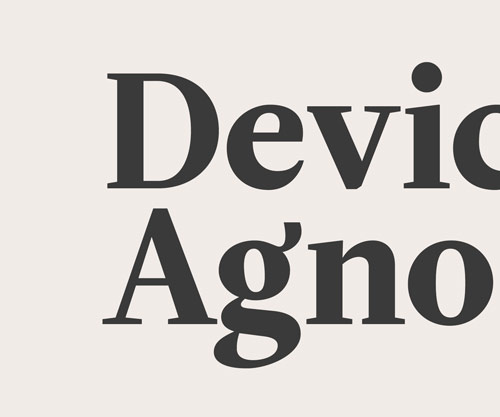
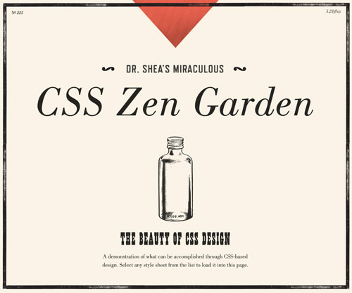

Near and dear to our hearts, DayTrip is a Paravel project designed to make it easy to find something great to do and someplace great to go. Austin/Texas area private beta out now.
We recently updated paravelinc.com with some new portfolio items, talks, podcasts, interviews, and a brand new home page graphic from Curtis Jinkins.

Device Agnostic summarizes how I view and approach building for the web. My perception has been shaped while working on responsive, component-based systems on a large-ish scale.

I was thrilled that Typekit and Dave Shea asked me to contribute a theme to CSS Zen Garden to celebrate its recent responsive update. Read about the process here and here.